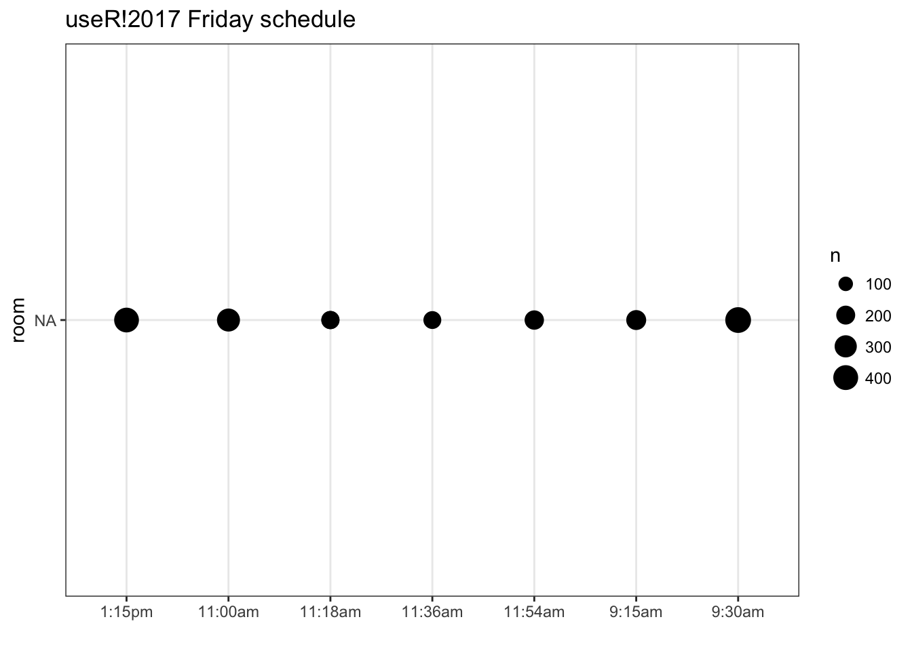
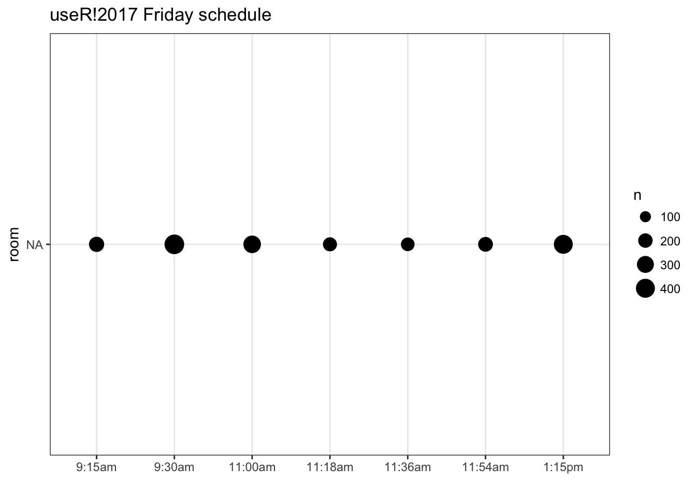

After attending useR!2017 for the first time, which great pleasure and new connections made. I decided to see if I could extract some of the information available in the public schedule. So as with my last post I’ll do a bit of scraping followed by a few visualizations.
Packages
library(tidyverse)
library(stringr)
library(utils)
library(plotly)
library(ltm)
require(visNetwork)Web scraping
I found this task easiest with the help of purrr:map(). First we find the full schedules at the following links
https://user2017.sched.com/2017-07-04/overview (Tuesday)
https://user2017.sched.com/2017-07-05/overview (Wednesday)
https://user2017.sched.com/2017-07-06/overview (Thursday)
https://user2017.sched.com/2017-07-07/overview (Friday)
then we read the entire page into a tibble along with a day variable.
day <- c("Tuesday", "Wednesday", "Thursday", "Friday")
link <- paste0("https://user2017.sched.com/2017-07-0", 4:7, "/overview", sep = "")
event0 <- map2_df(link, day,
~ tibble(text = readLines(.x),
day = .y))then with the help of stringr we extract the desired information from the document, following the idiom that “multiple simple regex are better then one complicated one”. I also filtered out most non-talk events.
events <- event0 %>%
filter(str_detect(text, "<span class='") | str_detect(text, "</h3>"),
!str_detect(text, "REGISTRATION"),
!str_detect(text, "COFFEE BREAK"),
!str_detect(text, "LUNCH"),
!str_detect(text, "WELCOME"),
!str_detect(text, "Poster"),
!str_detect(text, "RIOT SESSION"),
!str_detect(text, "Buses"),
!str_detect(text, "Dinner"),
!str_detect(text, "CLOSING")) %>%
mutate(time = str_extract(text, "<h3>.{1,7}"), # time
time = str_replace(time, "<h3> *", ""),
id = str_extract(text, "id='\\S{32}"), # id
id = str_replace(id, "id='", ""),
name = str_extract(text, str_c(id, ".*")), # name
name = str_replace(name, str_c(id, "'>"), ""),
name = str_extract(name, "^.*(?=( <span))"),
room = str_extract(text, "(?<=vs'>).*?(?=</span)")) %>% # room
fill(time) %>%
filter(!str_detect(text, "<h3>")) %>%
dplyr::select(-text)lets take a look at what we have by now just to see that we have what we want.
head(events)## # A tibble: 6 x 5
## day time id
## <chr> <chr> <chr>
## 1 Tuesday 9:30am 893eab219225a09907704ded2d6f4260
## 2 Tuesday 9:30am 30c0eebdc887f3ad3aefc486286b7efd
## 3 Tuesday 9:30am 57ce234e5ce9082da3cc126b0569157e
## 4 Tuesday 9:30am 95b110146486b0a5f802b3e4374cccdd
## 5 Tuesday 9:30am 7294f7df20ab1a7c37dfeae163ce89e1
## 6 Tuesday 9:30am f15703fe51e89294f2b5202972709ce3
## # ... with 2 more variables: name <chr>, room <chr>Now that we have all the information about the different events we can scrape every event page to find its attendees. This following chuck of code might seem a little hard at first, it helps to notice that there is a second tibble inside the big tibble.
people <- map_df(events$id,
~ tibble(attendee = tibble(text = readLines(
str_c("https://user2017.sched.com/event-goers/", .x))) %>%
filter(str_detect(text, " +<li><a href=")) %>%
.$text %>%
str_split(., "li><li") %>%
unlist(),
id = .x) %>%
mutate(attendee = str_replace(attendee, "(.*?)title=\"", ""),
attendee = str_replace(attendee, "\"><(.*)", "")) %>%
filter(!str_detect(attendee, "venue"),
!str_detect(attendee, "Private")))lets again take a look at what we have by now just to see that we have what we want.
head(people)## # A tibble: 6 x 2
## attendee id
## <chr> <chr>
## 1 Marc Trunjer Kusk Nielsen 893eab219225a09907704ded2d6f4260
## 2 lvaudor 893eab219225a09907704ded2d6f4260
## 3 Alan Ponce 893eab219225a09907704ded2d6f4260
## 4 bpiccolo 893eab219225a09907704ded2d6f4260
## 5 Katharina Barzagar Nazari 893eab219225a09907704ded2d6f4260
## 6 Benjamin Gutzmann 893eab219225a09907704ded2d6f4260visualizations
With a dataset with this many possibilities the options are quite few, so here I’ll just list a few of the ones I found handy. So first we just do a simple bubble plot, this will be done with left_join’s and count and piped straight into ggplot.
left_join(events, people, by = "id") %>%
count(id) %>%
left_join(events, by = "id") %>%
filter(day == "Friday") %>%
ggplot(aes(time, room, size = n)) +
geom_point() +
theme_bw() +
labs(title = "useR!2017 Friday schedule",
x = "")
Since both our room and time were simply character vectors, the ordering is not right. This can be fixed by setting the levels correctly. Here I have the ordered vectored for both room and time.
time_levels <- c("9:15am", "9:30am", "11:00am", "11:18am", "11:30am", "11:36am",
"11:54am", "12:12pm", "1:15pm", "1:30pm", "1:48pm", "2:00pm",
"2:06pm", "2:24pm", "2:42pm", "3:30pm", "3:45pm", "4:00pm",
"4:45pm", "4:55pm", "5:00pm", "5:05pm", "5:30pm", "5:35pm",
"5:40pm", "5:45pm", "5:50pm", "5:55pm", "6:00pm", "6:05pm",
"6:10pm", "6:15pm", "6:20pm", "7:00pm")
room_levels <- c("PLENARY", "2.01", "2.02", "3.01", "3.02", "4.01", "4.02")and we deal with it with a single mutate like so
left_join(events, people, by = "id") %>%
count(id) %>%
left_join(events, by = "id") %>%
mutate(time = factor(time, time_levels),
room = factor(room, room_levels)) %>%
filter(day == "Friday") %>%
ggplot(aes(time, room, size = n)) +
geom_point() +
theme_bw() +
labs(title = "useR!2017 Friday schedule",
x = "")
another way to visualize it would be to use a stacked bar chart like so
p <- left_join(events, people, by = "id") %>%
count(id) %>%
left_join(events, by = "id") %>%
filter(day == "Thursday") %>%
mutate(time = factor(time, time_levels),
room = factor(room, rev(room_levels))) %>%
ggplot(aes(time, fill = room, text = name)) +
geom_bar(aes(weight = n)) +
theme_bw() +
theme(axis.text.x = element_text(angle = 45, hjust = 1)) +
labs(title = "useR!2017 Thursday schedule",
x = "")
p
or with a bit of interactivity plotly::ggplotly can be used so that is possible to hover over each event to see name and size.
ggplotly(p, tooltip = c("n", "name"), width = 900, height = 555)## We recommend that you use the dev version of ggplot2 with `ggplotly()`
## Install it with: `devtools::install_github('hadley/ggplot2')`Network graph
To make our-self a simple network graph will I be using the visNetwork package, which have a lovely vignette. So here first of all to create a manageable graph I’ll subset all the Wednesday talks in room 4.02, which was the “Shiny I” and “Text Mining” blok.
sub_data <- left_join(events, people, by = "id") %>%
filter(day == "Wednesday", room == "4.02") %>%
dplyr::select(name, attendee, time)I this graph I will let each node be a event and let the edges be to which degree they share attendees. So we start
node_size <- sub_data %>%
group_by(name, time) %>%
summarize(n = n())to find how many attendees the events share with each other we first find all the different pairs of events with utils::combn function and with purrr and inner_join finds how many they have in common. Since utils::combn gives its result in a matrix we have to fiddle just a bit to our way back to a tibble.
conn <- combn(node_size$name, 2) %>%
as.tibble() %>%
map_int(~ inner_join(sub_data %>% filter(name == .x[1]),
sub_data %>% filter(name == .x[2]), by = "attendee")
%>% nrow()) %>%
rbind(combn(node_size$name, 2)) %>% t() %>% as.tibble()
names(conn) <- c("n", "from", "to")
conn## # A tibble: 45 x 3
## n
## <chr>
## 1 19
## 2 56
## 3 80
## 4 82
## 5 82
## 6 98
## 7 82
## 8 154
## 9 167
## 10 44
## # ... with 35 more rows, and 2 more variables: from <chr>, to <chr>for the node tibble we need to supply it with a id column, but I will also supply it with a label (name of the event), size (number of people in the event) and color (what blok is this event in. green = Shiny I, blue = Text Mining).
Shiny_I <- c("11:00am", "11:18am", "11:36am", "11:54am", "12:12pm")
Text_Mining <- c("1:30pm", "1:48pm", "2:06pm", "2:24pm", "2:42pm")
nodes <- node_size %>%
mutate(id = name,
label = str_wrap(name, width = 20),
size = n / 20,
color = case_when(
time %in% Shiny_I ~ "lightgreen",
time %in% Text_Mining ~ "lightblue"
))for the edge tibble it needs from and to columns that matches with the id in the node tibble. I will also supply with a constant color column (because if omitted it would borrow from the node coloring) and a width column to indicate how many attendees they share. This is again done with a couple of left_joins and the connectivity is the average percentage of attendees they share. Lastly we remove any edge with less then 0.5 connectivity to clear out the graph.
edges <- conn %>%
left_join(node_size %>%
dplyr::select(-time) %>%
rename(n_from = n),
by = c("from" = "name")) %>%
left_join(node_size %>%
dplyr::select(-time) %>%
rename(n_to = n),
by = c("to" = "name")) %>%
mutate(n = as.numeric(n),
n_to = as.numeric(n_to),
n_from = as.numeric(n_from),
connectivity = (n / n_from + n / n_to) / 2,
width = connectivity * 10,
color = "grey") %>%
filter(connectivity > 0.5)Which yields us with the wonderful graph which show a somehow clear divide between the two bloks.
visNetwork(nodes, edges, width = "100%")I hope you enjoyed this post and I would love you see any and all visualization or analysis you might have regarding this data.